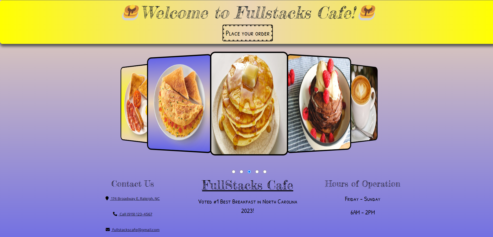

Projects

FullStacks Cafe
Node, MySQL, HTML, CSS, JavaScript
This website acts as a full stack menu and manager database for a restaraunt.
The front-end is a menu that is deployed via Express that allows customers to place and modify orders.
The back-end is a CLI using Inquirer and MySQL for a manager to modify the menu and view the order history.